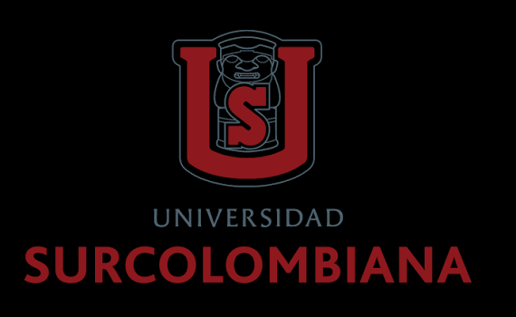
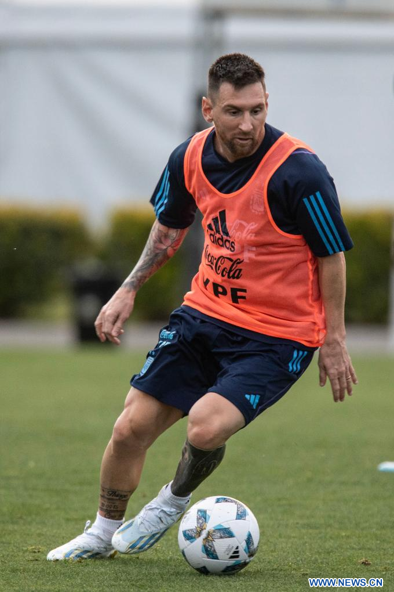
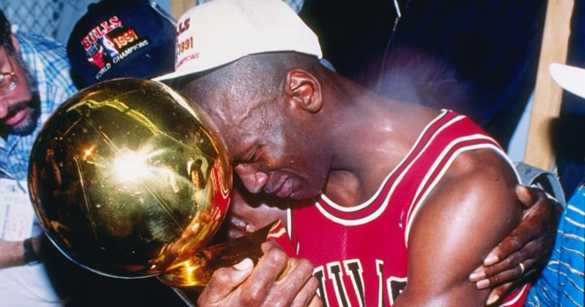
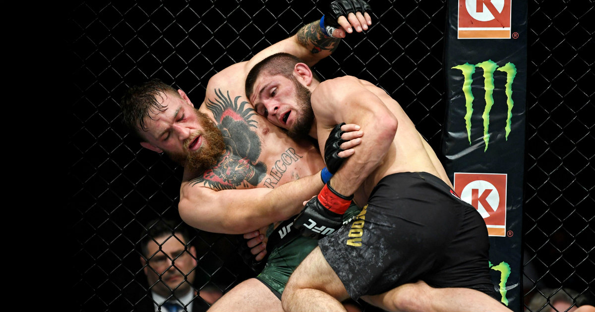

Mente · emoción · rendimiento
Psicología
del deporte




El cuerpo ejecuta · La mente decide
01
Qué es
Estudia cómo la atención, la emoción y la motivación cambian el rendimiento de quien compite o se ejercita. Busca dos cosas a la vez: rendir mejor y cuidar la salud mental.
Atención · Emoción · Motivación · Confianza
02
Orígenes
- 1898 Norman Triplett muestra que la presencia de otros altera el rendimiento.
- 1925 Coleman Griffith funda el primer laboratorio, en la Universidad de Illinois.
- 1965 Nace la Sociedad Internacional de Psicología del Deporte.
En Colombia crece con clubes, selecciones y la formación universitaria.
03
Funciones del psicólogo deportivo
- Evaluar concentración, ansiedad y motivación.
- Entrenar respiración, visualización, diálogo interno y rutinas.
- Acompañar lesiones, desgaste y el cierre de la carrera.
- Asesorar al entrenador en clima, liderazgo y comunicación.
04
Campos de desempeño
Alto rendimiento
Formación de base
Rehabilitación
Ejercicio y salud
Docencia e investigación
Deporte adaptado